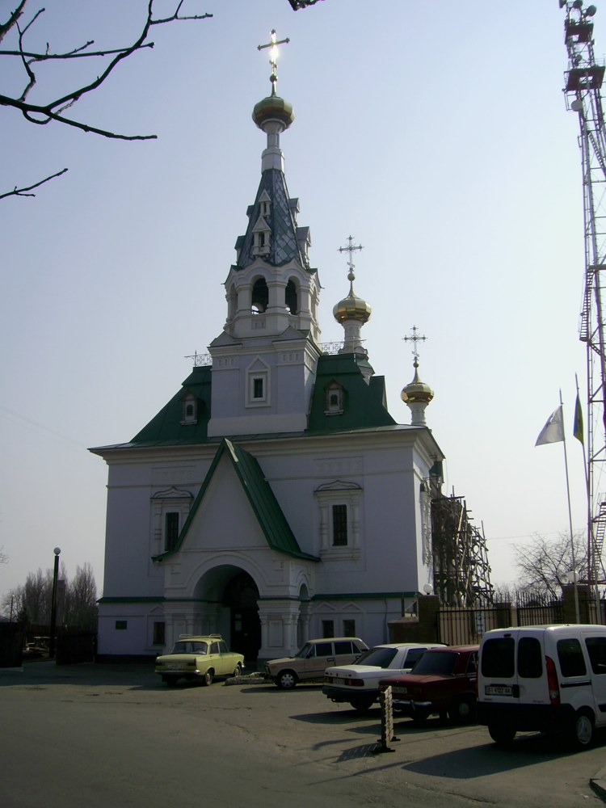

Кобеляки

Vlad2003 · Wikimedia Commons · CC BY-SA 3.0 · розмір зменшено

Кобеляки — місто в Полтавській області. Знайомство з містом можна почати з короткої прогулянки його вулицями, а потім перейти від міського краєвиду до річкового.
На фото ліворуч — один із краєвидів Кобеляк. Якщо фотографувати місто, варто почати із загального плану, а потім додати кілька деталей, наприклад будівлі чи вулиці, які привернули увагу.
Після міської прогулянки можна переглянути сторінку про Ворсклу й порівняти обидва краєвиди.